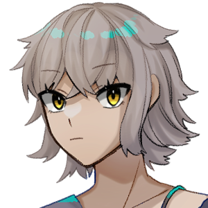

PC一覧
- 全員
- ソロシナリオ出身
- タイマン・2PLシナリオ出身
- 複数人シナリオ出身
- パートナー未設定
- パートナー有
- バディ有
- 所属有
- 学生
- 警察関係者
- 探偵・便利屋
- 20歳以下
- 20代
- 30代
- 40代
- 年齢不明
- 男性
- 女性
- 性別不明
- 神話技能持ち
- 君は風邪を引かない
- 素早い
- オシャレ
- 天才
- 強固な意志
- 勉強家
- 予期せぬ協力者
- 手先が器用
- 影が薄い
- 親の七光り
- 愛書家
- 鋭い洞察力
- アウトドア派
- 珍しい技能
- 芸術的才能
- 前職
- 天気予報士
- プロ・ドライバー
- 飛ばし屋
- 戦士
- 銃火器の達人
- 格闘センス
- 俊敏
- 信頼のおける人
- スポーツ万能
- 平凡な容姿
- 目つきが悪い
- 異性が苦手
- 不思議ちゃん
- 寄せ餌
- 大切なもの
- 暗黒の祖先
- 夜に弱い
- 動物に好かれる
- 斜め上からの発想
- ペット
- おおらか
- 潜水の名人
- 大酒飲み
- ド根性
- 受け身
- 奇妙な幸運
- 鋼の筋力
- 実は生きていた
- 急速な回復力
- 不屈の精神力
- 行方不明の家族
探索者：普通シナリオ出身 ※
※秘匿や特殊な世界観が未採用のシナリオ出身の探索者。探索者自身の設定には特殊なものを含む場合もある。


探索者：秘匿シナリオ出身


探索者：特殊 ※
※出身時点で詳細の秘匿・特殊な世界観での活動や特別な所属・種族、超能力の保有などが決定している探索者。


探索者：過去・未来シナリオ出身


探索者：ロスト


探索者：引退 ※
※原則、自発的な稼働は終了のPC。よほど連れていきたいシナリオがあれば復帰の可能性アリ。


探索者：NPC／KPC
 赤部徹
赤部徹
 繋遥
繋遥
 胡蝶潤
胡蝶潤
一花咲
祝園るる,エクバーグ
アイリス・ケンタウルス
 ココ・アンプロン
ココ・アンプロン
 東雲焔
東雲焔